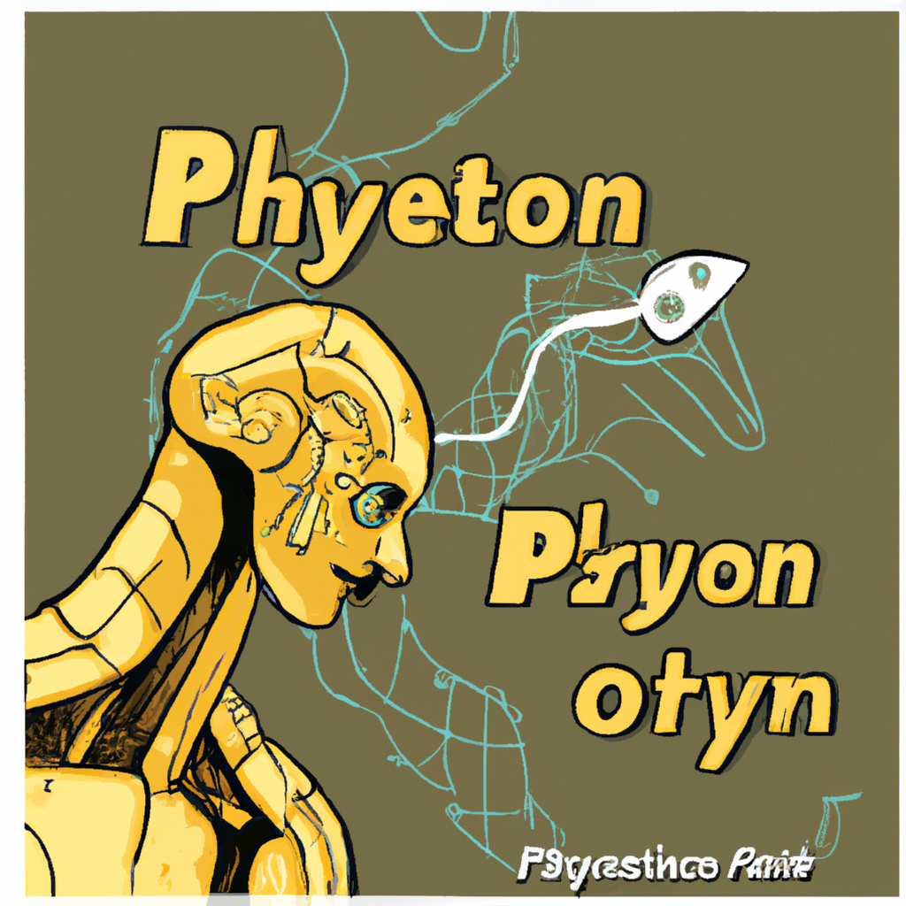

The future of Python and AI
The rise of Artificial Intelligence (AI) and Machine Learning (ML) has opened up a whole new world of possibilities for Python. Python has become a powerful tool for developers, engineers, and data scientists alike. With its huge library of libraries and frameworks, Python can be used to build everything from basic web applications to complex machine learning models.
As AI and ML become more commonplace, Python will become even more invaluable. AI and ML can be used to automate processes, analyze large datasets, and even provide intelligent recommendations. Python is a versatile language that is easy to learn and can be used to create powerful applications.
The combination of Python and AI is already being used in many fields. For example, Python is used in natural language processing (NLP), predictive analytics, and automated trading systems. AI can also be used to create chatbots, voice-controlled applications, and virtual assistants.
Python is also becoming increasingly popular in robotics. Robotics-based applications such as self-driving cars, drones, and robotic arms are all built using Python. With the help of AI, robots are becoming smarter and more autonomous.
The potential of Python and AI is truly limitless. As technology continues to advance, Python will continue to be a powerful and valuable tool. With its ever-growing library of libraries and frameworks, developers and data scientists will continue to find new and exciting ways to use Python to create powerful applications. With the help of AI, the possibilities are truly endless.